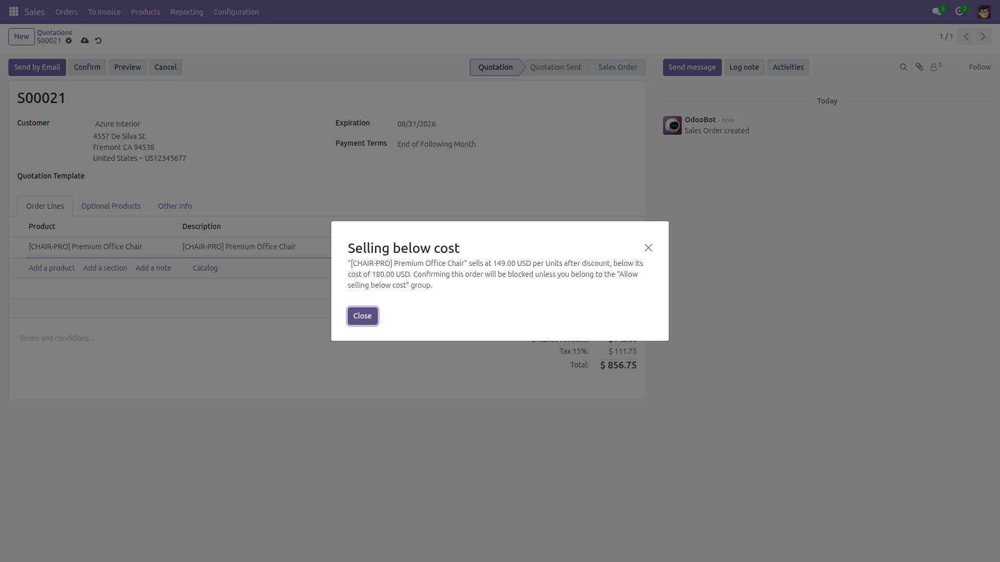
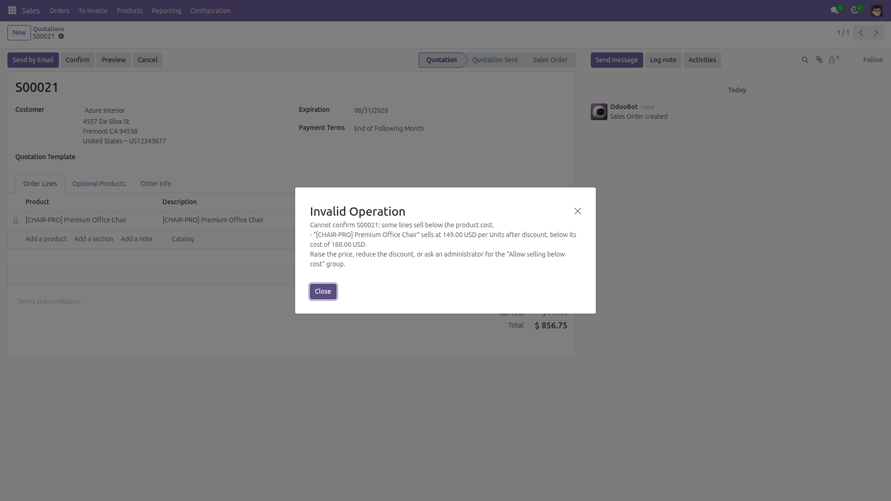
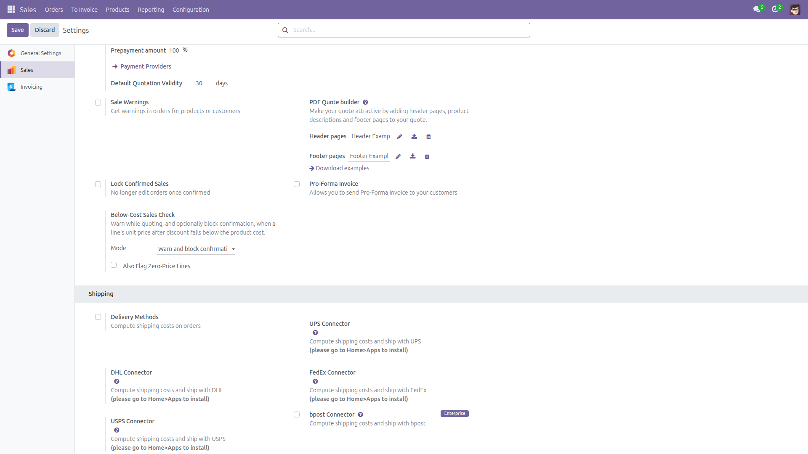

Warn or Block Selling Below Cost
Catch loss-making sale order lines before they are confirmed — with currency and unit-of-measure conversion.
A discounted line, a mistyped price or a stale pricelist can quietly sell a product
below what it costs you. Odoo accepts any unit price without a second look.
This module compares every sale order line's unit price (after discount) against the
product's standard cost and warns the salesperson — or blocks the confirmation —
depending on one simple setting.
- Three modes: Off, Warn while quoting (default), or Warn and block confirmation.
- Edit-time warning: a non-blocking popup names the line, its effective price and its cost the moment the price, discount, product or unit of measure changes.
- Confirm-time block: in Block mode, confirming raises an error listing the offending lines (capped at 5).
- Bypass group: members of "Allow selling below cost" (administrators by default) can always confirm.
- Currency aware: the cost is converted from the company currency to the order currency at the order date.
- Unit-of-measure aware: a cost per Unit is compared per Dozen when the line sells dozens.
- Optional zero-price flagging: also flag lines with a zero unit price on products that have no cost configured.
- Section and note lines are always ignored. Automated portal/online confirmations are never blocked.
- No new models, no extra menus — one settings block in Sales settings.
Screenshots
1. Editing a line below cost pops a clear warning naming price and cost:

2. In Block mode, confirmation stops with the offending lines listed:

3. One settings block in Sales settings: mode selector and zero-price flagging:

Installation
- Download the module into your addons directory.
- Update the apps list (developer mode: Apps, then Update Apps List).
- Install Warn or Block Selling Below Cost.
Configuration
- Open Settings, then Sales, and find the Below-Cost Sales Check block under Quotations & Orders.
- Pick a mode: Off, Warn while quoting (default) or Warn and block confirmation.
- Optionally enable Also Flag Zero-Price Lines to catch zero-price lines on products without a configured cost.
- To exempt specific users in Block mode, add them to the Allow selling below cost group (visible in developer mode; administrators are members by default).
Usage
- Quote as usual. When a line's unit price after discount falls below the product's standard cost, a warning popup names the line, its price and its cost in the order currency.
- In Warn mode the popup is advisory: the order can still be saved and confirmed.
- In Block mode, confirming an order with below-cost lines raises an error listing up to 5 offending lines; raise the price, reduce the discount, or ask a member of the bypass group to confirm.
- Integrations can skip the block explicitly by confirming with the context key
check_sale_below_cost=False.
Limitations (honest ones)
- The comparison uses the product's standard cost field (which follows your costing method), not landed or actual procurement cost.
- Products with a zero standard cost are skipped by default — a zero cost usually means "not configured". Enable zero-price flagging to catch free lines on such products.
- The edit-time warning is advisory and appears while editing; only Block mode enforces anything at confirmation.
- Automated confirmations by portal or public users (online quote acceptance, post-payment flows) are deliberately never blocked.